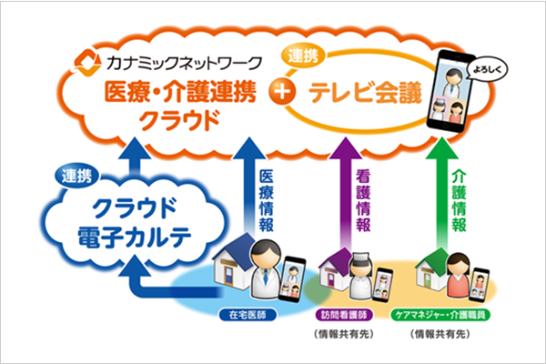

介護事業のテレワーク化を
カナミックのクラウドサービスが実現!
オールインワンの介護ソフト
計画書の作成やスケジュールから介護・看護記録などの業務は、すべてPCやスマートフォン・タブレット上で完結できます。また、テレビ会議システムを使って自宅に居ながらカンファレンスも可能です。
ICT化で直行直帰の働き方を実現!

タブレットやスマートフォンを利用して、必要な業務を完結する事ができるため、報告や書類作成のために事業所へ戻る事なく、直行直帰のシフトが実現できます。
多職種間で日々の情報共有に活用
実施記録などはカナミックの情報共有システムで、強固なセキュリティで保護された状態でリアルタイムに多職種間で共有する事ができます。
有事でも事業継続できる体制に
自宅で請求業務も対応可能なため、事業所内で対応していた業務もテレワーク化が可能になり、有事でも品質を落とさず業務が可能です。